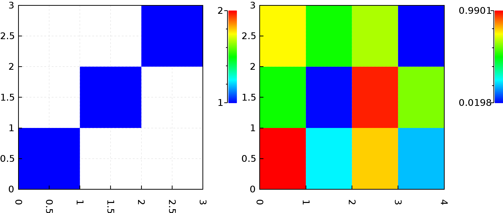

Layouts and combinators #
Individual plots may be combined into complex figures.
This is done by the group() and the sequence() methods.
group() turns a tuple of plots into a single plot containing each.
sequence() turns a collection (sequence) of plots into a single plot containing each.
Both group() and sequence() take multiple arguments and the last argument is an instance of the org.nspl.Layout type.
The layout describes how to lay out the individual panels relative to each other.
The simplest three layouts are TableLayout(numberOfColumns), HorizontalStack() and VerticalStack(), with these three you can build arbitrary multi-panel figures.
Here are two plots from a previous example in a single panel:
import org.nspl._
import org.nspl.awtrenderer._
import org.nspl.data.DataMatrix
import scala.util.Random.nextDouble
val sparseMatrix =
List(
(0d, 0d, 1d),
(1d, 1d, 1d),
(2d, 2d, 1d),
)
val plot1 = rasterplot(sparseMatrix,
)(par())
val denseMatrix = new DataMatrix(
rows = Array.fill(12)(nextDouble()), numCols = 4, numRows = 3)
val plot2 = rasterplot(denseMatrix,
)(par())
val complexPlot = group(plot1,plot2,TableLayout(2))
renderToByteArray(complexPlot.build, width=2000)
The above code block produces this plot:
 Or the same with
Or the same with sequence():
import org.nspl._
import org.nspl.awtrenderer._
import org.nspl.data.DataMatrix
import scala.util.Random.nextDouble
val sequencedPlot = sequence(List(plot1,plot2),TableLayout(2))
renderToByteArray(sequencedPlot.build, width=2000)
The above code block produces this plot: 